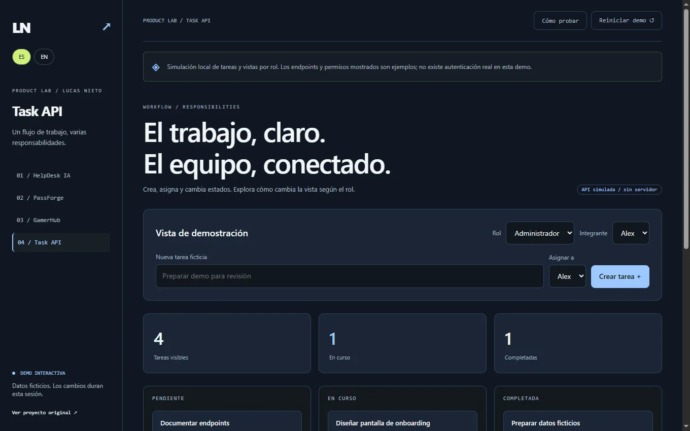

01 / SOPORTE / IA APLICADA
01 / SOPORTE / IA APLICADAHelpDesk IA
↗Tickets, notas y cambios de estado en un espacio privado por visitante.
React · Cloudflare Workers · D1
ABIERTO A OPORTUNIDADES
CATAMARCA, ARGENTINA / UTC−3
Lucas Nieto
Full Stack Developer
Desarrollo interfaces, APIs y automatizaciones. Responsable de IT en Talking desde 2020.
Crea un ticket, revisa su estado y consulta su historial.
Explorar este proyecto ↓01 / SOPORTE CON CRITERIO
Describe un incidente, revisa el diagnóstico y guarda el ticket en su historial.
React · Cloudflare Workers · D1
Tickets en D1, espacios aislados de una hora y datos ficticios. Análisis por reglas mientras se habilita Gemini.
DESARROLLO React / Next.js / Node.js / Laravel
EXPERIENCIA Responsable IT en Talking desde 2020
01 / TRABAJO SELECCIONADO
Qué resuelve cada proyecto.
Qué decisiones tomé al construirlo.
01 / SOPORTE / IA APLICADATickets, notas y cambios de estado en un espacio privado por visitante.
React · Cloudflare Workers · D1
 02 / GENERACIÓN / ORGANIZACIÓN
02 / GENERACIÓN / ORGANIZACIÓNGeneración con Web Crypto y registros separados por sesión.
Next.js · TypeScript · Prisma · Better Auth
 03 / CATÁLOGO / COMUNIDAD
03 / CATÁLOGO / COMUNIDADCatálogo de FreeToGame y favoritos independientes por perfil.
React · Cloudflare Workers · D1

04 / TASK APIHelpDesk IA, PassForge y GamerHub usan backends reales. Task API es una vista interactiva.
Todos los repositorios ↗02 / EXPERIENCIA EN OPERACIÓN
Responsable de IT 2020 — ACTUALIDAD
Talking América S.R.L. · Catamarca
Desarrollo herramientas internas, integro APIs y automatizo reportes. También trabajo con servicios Linux, Docker y Nginx: entiendo el recorrido desde una pantalla hasta su operación.
Proyectos profesionalesIntranet corporativa y sistema para un estudio jurídico. Podemos conversar sobre mi participación y las decisiones técnicas en una entrevista.
Técnico Superior en Programación · Diplomatura en desarrollo web full stack
03 / SIGUIENTE CONVERSACIÓN
¿Buscas un developer para tu equipo?
Cuéntame sobre el puesto y qué necesitan construir.